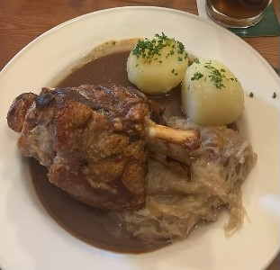
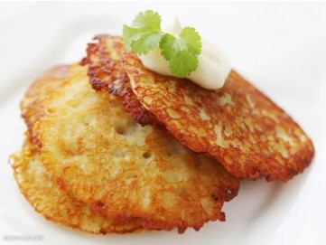
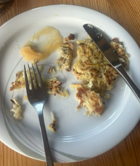
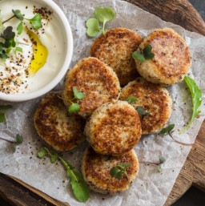
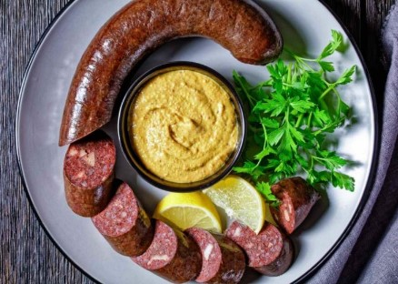

멀고 먼 유럽 땅 중앙에 위치한 독일! 먼 거리만큼이나 문화도 많이 다를 것만 같은데요. 전혀 다른 문화를 가진 독일과 한국의 음식 문화에도 비슷한 점이 있습니다. 그래서 오늘은 한국과 유사한 재료를 사용하거나 조리 방법이 비슷한 독일 음식을 여러분들께 소개해 드리고자 합니다.
우리나라 음식과 독일 음식에 어떤 유사점과 차이점이 있는지 비교하며 보면 더 재미있을 거예요. 그럼 시작해 보죠!
1. 자우어크라우트 Sauerkraut
대한민국, 하면 딱 떠오르는 전통 음식이 무엇인가요? 단연 김치일 것입니다. 우리 민족은 김치 전용 냉장고를 이용하고, 김치전과 김치를 함께 먹을 만큼 김치에 진심인 나라이죠. 그런데 독일에도 김치처럼 절인 음식이 있다는 사실을 아시나요?
Sauerkraut는 ‘시다’는 의미의 ‘sauer’와 '배추, 양배추'의 의미를 가진 ‘Kraut’가 합쳐진 합성어입니다. 풀어 말하면 '신 양배추'이죠. 쉽게 말하면 양배추 절임이라고 할 수 있어요.
자우어크라우트는 우리나라의 김치처럼 젖산 발효가 일어나는 식품이에요. 발효 식품이기에 톡 쏘는 신맛이 가장 강하며, 소금의 짠맛과 양배추의 단맛이 살짝 난답니다.
언뜻 보면 백김치를 잘라 놓은 것처럼 보이지만, 자우어크라우트는 독일을 포함한 중앙 유럽과 동유럽 지역에서 주로 먹는 요리입니다. 독일로 유학을 간 한국 유학생들이 한국 김치가 그리울 때 자우어크라우트를 이용해 김치찌개를 만들어 먹는다고도 하네요!
위 사진은 젊은 매거진의 팀원 J가 직접 독일에 가서 먹었던 독일 음식 사진이에요. 고기(슈바인학센) 밑에 얇게 깔려있는 음식이 바로 자우어크라우트랍니다!
J에 따르면, 식당에 함께 간 독일인 일행이 자우어크라우트를‘독일의 김치’라고 소개했다고 합니다. 자우어크라우트는‘매운 맛이 없는 김치를 뭉개 식초를 넣고 따뜻하게 절인 맛’이었으며 맛이 낯설지 않았다고 하네요! 차갑게 먹는 김치와는 또 다른 매력이 있는 것 같습니다. 또한 독일에서는 자우어크라우트를 주로 반찬으로 먹고, 슈바인학센과 함께 곁들여 먹는다고 합니다.
2. 라이베쿠헨 Reibekuchen
한국에 감자전이 있다면 독일에는 라이베쿠헨이 있습니다.
라이베쿠헨은 독일식 감자 요리인데요. 감자, 양파, 밀가루, 소금, 계란을 넣어 반죽하고, 반죽을 버터나 식용유 등에 올려 쿠키처럼 바삭하게 튀겨 만들죠.
라이베쿠헨이 완성되면 빵이나 사과 무스와 곁들여 먹습니다. 겉은 튀겼기에 바삭하고, 속은 감자 때문에 포슬포슬한 식감이라고 해요.
마찬가지로 라이베쿠헨도 J가 직접 먹어봤다고 합니다. 냄새나 모양이 감자전과 매우 유사했다고 해요. 하지만 위에서도 서술했듯 빵처럼 포슬포슬한 식감이었다고 하네요.
달달한 사과무스를 발라 먹으니 토스트에 잼을 발라먹는 느낌이었고, 의외의 조합이지만 잘 어울려서 놀랐다고 합니다. 독일인들은 소스에 찍어먹기보다는 오른쪽 사진처럼 소스를 덮어서 먹었다고 해요. 또 사과 무스뿐 아니라 설탕을 뿌려 먹기도 한다네요. 하지만 사과 무스의 상큼함이 느끼함을 잡아주기 때문에 설탕보다는 사과무스가 나았다는 의견을 들을 수 있었습니다.
우리나라에도 독일의 라이베쿠헨을 판매하는 음식점이 있다고 하니 한번 찾아가 보아도 좋겠네요!
3. 프리카델렌 Frikadellen
이 둥글고 노릇노릇한 독일 음식의 이름은 무엇일까요? 바로 '프리카델렌'입니다.
프리카델렌은 다진 고기를 동그랗게 만들어 프라이팬에 튀겨 만드는 일종의 스테이크입니다. 햄버그스테이크, 미트볼, 떡갈비 등에 비유되곤 하죠.
프리카델렌은 독일 빵 중 하나인 브뢰첸(Brötchen), 다진 고기와 잘게 썬 양파, 계란, 소금을 넣어 만듭니다. 브뢰첸 대신 빵가루를 사용하기도 해요.
겉보기에는 햄버그스테이크와 유사하지만 식감은 우리나라의 떡갈비와 유사하다고 하네요.
4. 블루트부어스트 Blutwurst
‘한국의 분식 메뉴’하면 바로 떡·튀·순이 떠오릅니다. 그런데 독일에도 우리나라의 순대, 특히 피순대와 매우 비슷하게 생긴 음식이 있다는 것을 아시나요?
독일의 소시지(Wurst)가 유명하다는 사실은 아실 겁니다. 독일의 소시지는 1500개가 넘을 만큼 종류가 다양한데요. 그중에는 돼지의 껍질과 피, 보리 등을 넣어 만드는 블루트부어스트도 있습니다. 블루트부어스트는 Blut(피)와 Wurst(소시지)의 합성어로, 직역하면 '피 소시지'라는 의미입니다. 돼지의 피를 넣어 만들기 때문에 이런 이름이 붙은 것이죠.
블루트부어스트는 염장한 피순대라는 의견도 있고, 선지와 맛이 비슷하다는 의견도 있습니다. 어느쪽이든 한국의 피순대를 생각하고 블루트부어스트를 먹는다면 예상과 다른 맛에 조금 놀랄 수도 있겠네요!
여기까지 한국 음식과 비슷한 독일 음식 네 가지를 알아보았는데요, 여러분은 어떤 음식을 가장 먹어보고 싶으신가요?
독일에 방문할 일이 있다면 위에 소개해 드린 음식을 먹어보고 한국 음식과 얼마나 비슷한지 비교해 보는 것도 좋겠습니다.